📍 功能入口
功能入口：合约详情页底部【资讯】-【AI 要点汇总】；点击【展开】查看更多
期货通PC 版使用手册
2025 年4 月
同花顺期货通是一款专业的期货投资软件，由浙江同花顺网络科技有限公司开发。
这款软件针对中国期货市场进行了深度定制，致力于为投资者提供安全、稳定、
高效的期货交易服务。
上海期货交易所、郑州商品交易所、大连商品交易所、中国金融期货交易所等。
助投资者及时掌握市场动态。
满足投资者不同的交易需求。
风险，降低亏损。
基本面分析等。
同花顺期货通的界面设计简洁明了，操作方便。主界面包括行情报价、自选股、
下单等模块，支持自定义布局。软件还提供了丰富的主题皮肤，让投资者可以根
据自己的喜好进行个性化设置。
同花顺期货通拥有完善的客户服务体系，提供在线客服服务。同时，软件还支持
在线视频教程、帮助文档等学习资源，帮助投资者快速上手。
操作系统：64 位的Windows7 以上操作系统
硬盘空间：300M 以上硬盘剩余空间
从同花顺期货通官网下载安装包：
https://goodsfu.10jqka.com.cn/download/?source=pc_xiazaizhongxin&downl
双击安装包进入同花顺安装界面点击“下一步”
1 单击浏览选择安装路径(默认安装路径c：\THS)然后点击“立即安装”
双击桌面上的期货通图标，输入账号密码，即可直接进入；
从程序组中进入，即沿着"开始"→"程序"→"同花顺"，也可进入本系统。
要登入“期货通”，有以下七种方法：
①qq ②微信③微博④验证码⑤游客⑥二维码⑦同花顺账户
要退出“期货通”，有以下几种方法：
按Alt+F4 ；
用鼠标点击窗口右上角的关闭按钮"×"。
进入软件后的初始界面为行情自选界面，界面由八个部分组成，自上而下分别为：
用于切换查看不同标的的行情，包括期货、期权、外盘、外汇、黄金、股票等；
用于操作账号、软件更新、预警通知、多屏展示和系统功能等个性化的配置项
展示合约报价相关的指标。点击表头左侧的设置按钮，可以调整表头次序，也可
将合约的各项表头数据以列表形式展示而构成的图表
在列表中单击合约后便可看到其对应的行情分时图/K 线图以及成交量，快速了
解合约近期行情，副图的交互与主图一致。
展示上证指数和同花顺指数，鼠标触碰时会展示指数分时副图和成交量
可用于开户、账户登录、打开期货通搜索框- “同花顺键盘精灵”，支持搜索
在右上角的【系统操作设置栏】中选择【系统设置】- 【系统设置】
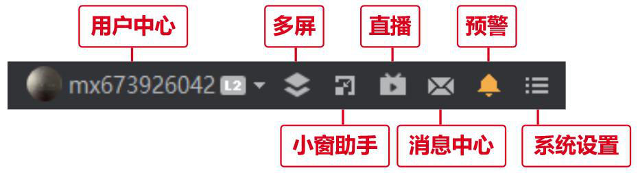
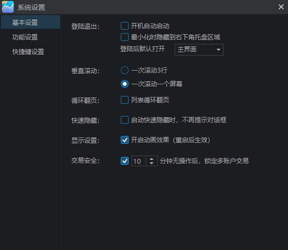
自定义设置常用、行情、交易、画线、图表相关的快捷键，也可以点击“恢复默
认”恢复成默认快捷键。
①调整软件界面色调、版本更新、查看软件信息和用户反馈。
②换肤：有经典、深灰和淡雅三种风格可选，默认为深灰。
③版本更新：选择【软件更新】则更新为最新版本；选择【更新内容】可以查看
【当前版本更新】和【历史版本更新】；【版本回退】用于退回可退的历史版本；
点击【关于】-【版本信息】可查询此版本的版本号
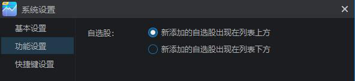
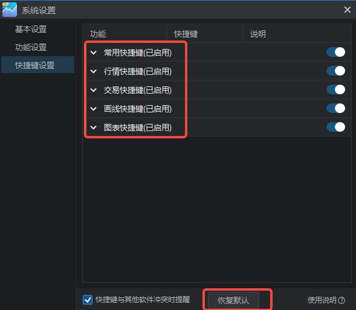
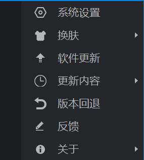
注：自选、期货、外盘、外汇、外盘、股票、黄金和环球等板块的界面布局一致，
以下只对期货行情界面的组成部分做出说明。
在合约列表上方，可选择国内各个交易所下属期货品种
单击列表中的合约即可看到对应的分时副图，查看当天的价格走势图。
双击副图可以进入对应主图界面。
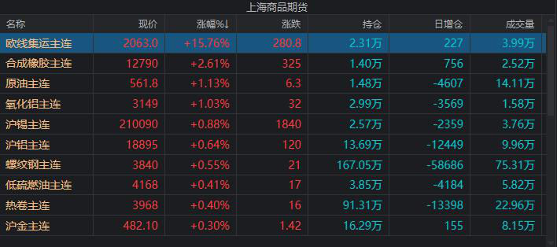
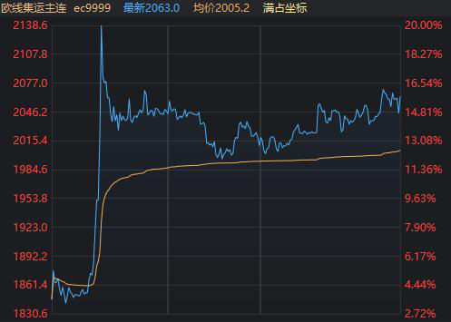
所选合约对应的分类，例如：品种、交易所等类型2.自选股：“期货通自选”中
的合约3.盯盘助手：通过排名发现机会合约4.快讯：期货实时资讯概要
展示所选合约对应的交易所或市场，列表内展示其分类下的其他合约
对所有合约进行排序，点击列表排序中的合约，滑动鼠标滚轮可以查看下方更多
合约。点击排名右上方的“设置”图标，可以切换其他的排名
行情走势图为合约的主图，双击任一合约即可进入其主图界面。主图支持分周期
查看、多图同列等更多样化的行情展示需求，也支持画线、测量等图上操作功能，
以提供更精细、更丰富的信息。走势图分为周期切换栏、主图工具栏、行情主图、
行情副图和指标切换栏等板块。
双击主图可以进入历史分时，双击副图可以放大副图。
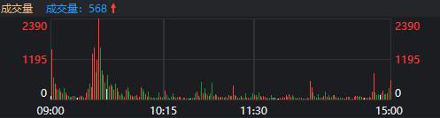
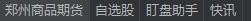
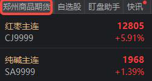
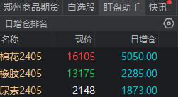
盘口板块提供实时反映市场买卖双方力量的数据，包括成交价、成交量、委买盘
和委卖盘等。这些数据可以帮助了解市场的实时动态和主力资金流向，从而更好
地进行交易决策。盘口板块由五部分组成，分别为明细、大单、价量、基差和社
区。
正常状态下只展示1 档买卖行情，开通Level2 后则可如图看到5 档行情。根据
买卖双方的价量对比，可以判断短时间内的价格走势。
包含了合约买卖盘的各项信息，可在设置界面调整盘口展示的内容和顺序。
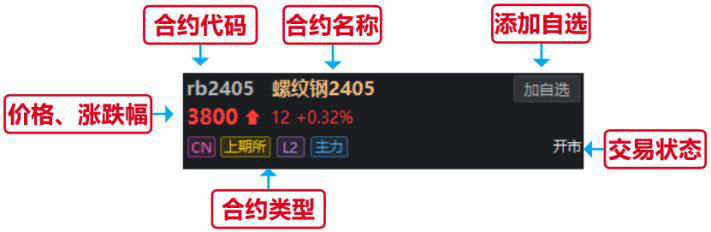
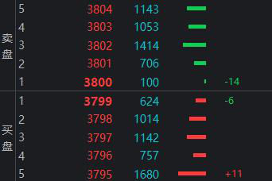
展示实时成交的记录，下拉“全部明细”也可以切换“大单明细”，大单的条件
可在大单界面进行设置。点击“筛选”，进入对全部明细的筛选界面，可限定品
种、手数、时间范围、成交价位、买卖类型等，便于了解限定条件下的成交情况。
只展示符合大单条件的买卖交易，点击“
此合约的平均成交量的倍数关系进行设定，应用于全部合约；或者只对此合约设
置固定手数以上的交易认定为大单。
展示在买卖双方中，大单和散单的占比情况，可用于分析交易者的机构和个人占
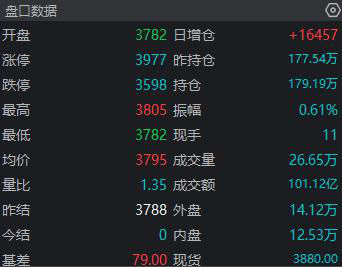
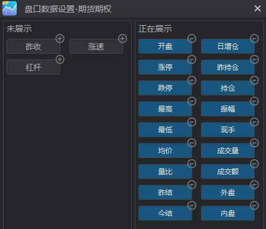
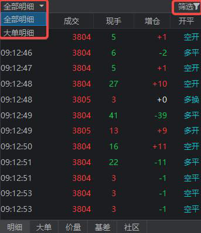
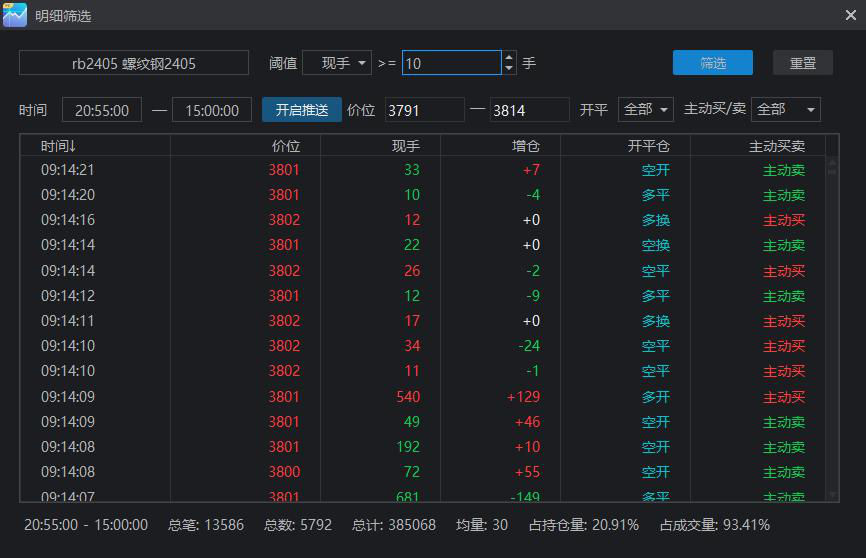
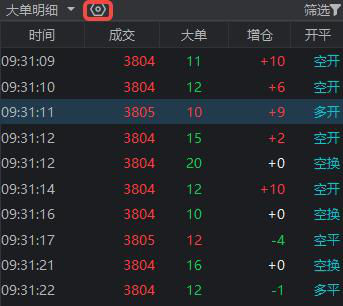
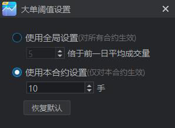
比情况。
用线段长度和颜色展示不同价格的买卖成交量，绿色代表空方，红色代表多方。
在明细表中，也可以看到多空双方的数量对比，以及不同买卖类型的占比情况。
基差代表期货价格与现货价格的差值。此板块需要选择现货价格和期货价格的基
准，并会展示现货价格和期货价格的变化图。
AI 要点汇总通过智能算法整合主流资讯平台、机构报告与行情异动，全天候实
时捕捉品种相关的重要事件，按时间顺序展示标题、摘要、时间和来源，帮助用
户快速掌握近24 小时内的市场核心动态。
内容，点击【来源】查看原文，点击【关联品种】切换其他品种资讯。
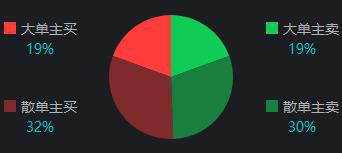
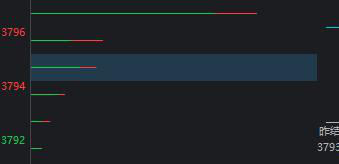
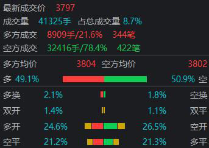
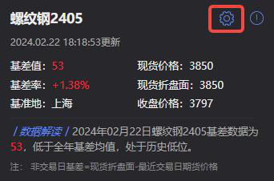
期权行情模块用于展示不同合约的实时报价及变化情况，界面由筛选区域、T 型
报价表、分时走势及表头设置四部分组成：
提供期权标的、合约月份、期权类型、价内/价外状态、展示数量及排序方式等
多项条件，支持快速定位目标合约及分类查看市场主流品种。
以行权价为中轴，左右对称展示认购与认沽期权的报价、涨跌、成交、持仓等信
息，适用于策略搭配与行情对比分析。
右侧显示当前所选期权的分时走势与盘口变化，便于跟踪实时交易动态与市场情
绪。
支持自定义T 型报价表中展示的字段内容，包括最新价、涨跌、涨幅%、买卖价、
成交量、持仓量、隐含波动率、内外在价值等指标。用户可自选所需字段，并对
字段进行自定义排序，点击“确定”即可实时更新视图展示，也可恢复为默认配
置。该功能支持灵活调整表格结构，便于聚焦关键数据，提高信息获取效率。
按行权价展示各期权合约的成交量柱状图，支持拖动下方滚动条调整可视范围，
用于观察市场交易活跃区间。
按行权价展示期权持仓量分布情况，支持拖动下方滚动条调整可视范围，便于识
别市场主要关注的价位区间。
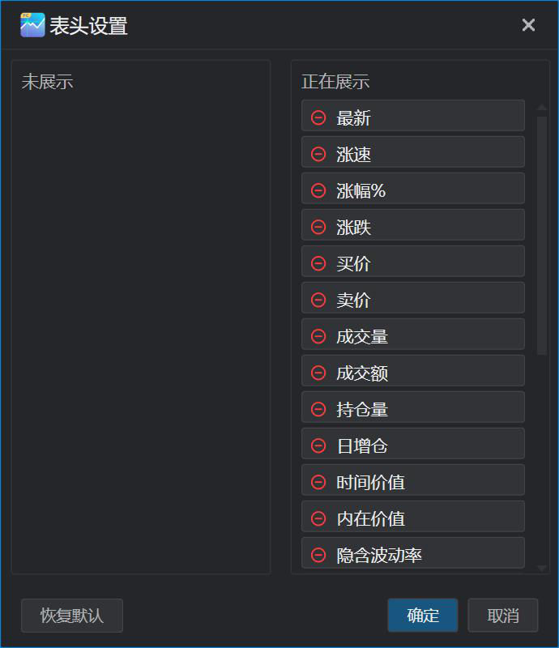
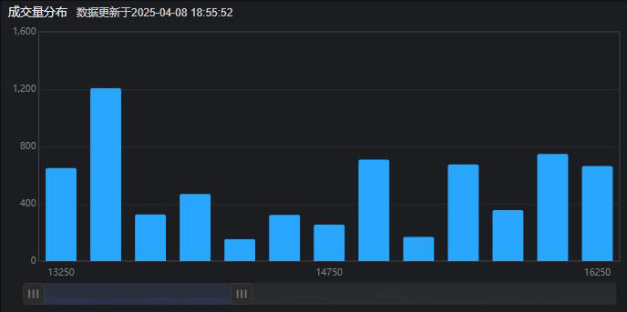
分别统计认购、认沽的该合约的成交量/持仓量，用于分析该合约期权整体的虚
实值结构。
展示相同行权价下，不同到期日对应的隐含波动率变化情况，用于观察市场对短
期与长期波动的定价差异。图中每条曲线代表一个行权价，横轴为期权到期日，
纵轴为隐含波动率。可通过右上角筛选器调整展示的行权价范围。
展示期权不同行权价对应的隐含波动率分布，反映市场对不同执行价波动风险的
定价。图中横轴为行权价格，纵轴为隐含波动率，常用于分析“波动率微笑”或
“倒笑”结构。可通过顶部筛选器切换展示的合约周期。
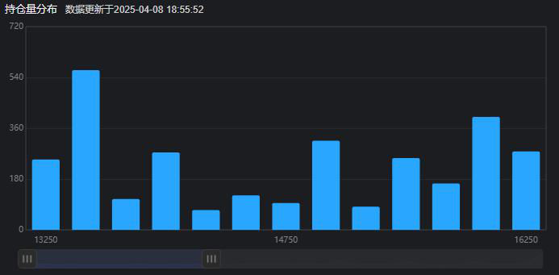
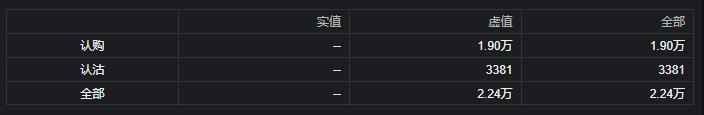
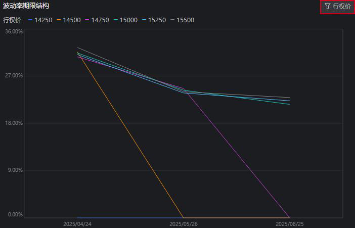
期权异动页面用于实时追踪市场中出现异常波动的期权合约，通过多维度筛选
（如监控范围、异动类型、期权方向和虚实程度），帮助快速识别市场资金动向。
用于设置异动监控范围与筛选条件，支持以下维度：
①监控范围：可按交易所、标的合约或自选列表进行筛选。
②异动类型：如大单买入、大单卖出、急速拉升、猛然打压，可通过左侧
入参数设置，调整触发阈值。
3 期权方向：可选认购期权、认沽期权。
④期权虚实：支持筛选实值期权、虚值期权。
展示最新触发异动条件的期权合约明细，包括成交时间、合约名称、涨跌幅、买
卖价、持仓量、波动率变动、到期日、剩余天数等信息，便于快速识别资金异动
方向。
用于展示期权市场中的各类指标排名，便于快速查看当前最活跃、波动最剧烈的
期权合约。
显示所有期权合约在当前交易日的关键数据，包括成交量、成交额、持仓量、最
新价、涨跌幅、买卖盘价、到期日、剩余天数等。可点击表头切换排序方式，快
速切换关注指标。

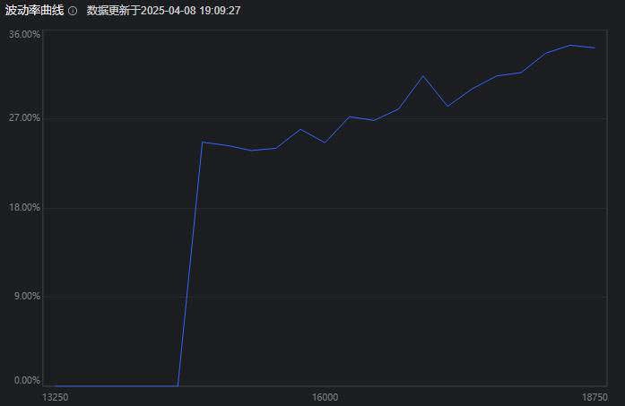
点击【筛选】可打开筛选面板，自定义需要展示的交易所与期权类型（认购、认
沽）。
用于集中展示即将到期的期权合约，默认展示各品种最接近平值（ATM）的期权
合约，便于把握临近到期的交易机会或避险需求。
用于模拟期权组合在不同标的价格与到期时间下的盈亏表现。通过矩阵图直观展
示收益区间、最大风险与盈亏平衡点，辅助评估策略价值与风险敞口。
价值扫描顶部为参数设置区域，用户可选择模拟分析的期权标的、交易方向（买
入认购、卖出认购、买入认沽、卖出认购）、参考的行权价区间，并查看当前组
合对应的权利金总额、最大亏损、最大盈利及盈亏平衡点等关键指标，为策略评
估提供基础输入条件。
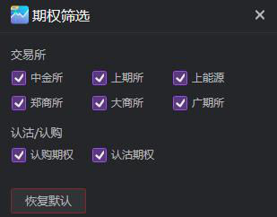
表格纵轴为标的价格（行权价偏移），横轴为到期时间，颜色代表盈亏金额。
支持自定义波动幅度与合约波动率倍数，以控制模拟的盈亏范围和敏感度。用户
可选择展示内容为盈亏金额、盈亏比例或期权价格，并切换“表格”或“图表”
两种视图形式，灵活观察策略在不同情境下的收益结构。
行情图可以在不同的周期下展示，以便于用户可以了解合约不同周期下的走势，借此判
断下一阶段的价格变动。
【期货】等行情副图周期切换入口位于右上角
行情图可以展示以不同周期为单位的走势图，点击不同周期按钮即可切换。
①固定周期：“分时”、“日线”这两个周期固定展示，不可隐藏；“周线”、
“月线”、“季线”、“年线”、“1 分”、“3 分”、“5 分”、“15 分”、
“30 分”、“60 分”等周期为固定周期，可以隐藏或展示，但不可编辑
②展示周期：点击“…”，在想要展示的周期
，则会增加该周期的展示选项。
③自定义周期：点击“…” - “自定义”进入自定义界面，点击“新增周期”，
选择“周期数”和“周期单位”，保存后即生效。若要删除，则点击周期旁的“删
按钮。
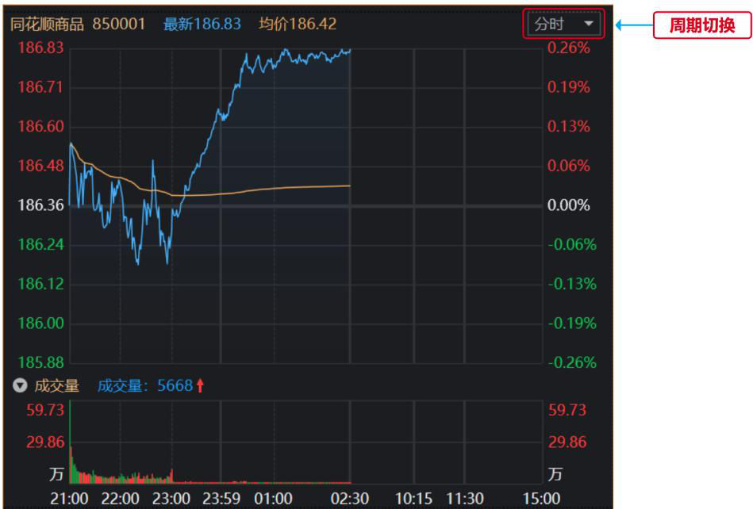
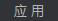
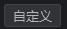
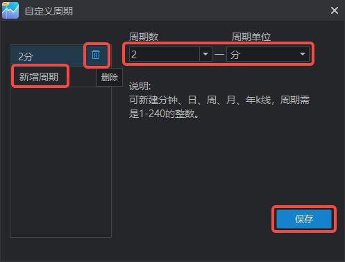
点击【合约】周期栏内的“多周期图”
不同周期的图像（两行两列）。点击周期的下拉箭头，可选择多周期图的样式。
周期可选范围为固定周期和自定义添加周期，各个图像的周期不可重复。每个周
期都可以独立的展示主图和副图的指标。
点击主图工具栏中的【图表联动】，则可同步显示布局范围中所有的走势图的联
动选项。
①时间联动：在点击走势图后，其他走势图同步显示这一点
②日期范围：同步显示联动范围中所有走势图的坐标轴日期范围
画线分析是期货交易中非常重要的工具之一。通过对价格走势进行划线分析，可
以更好地把握市场趋势，从而制定出合理的交易策略。
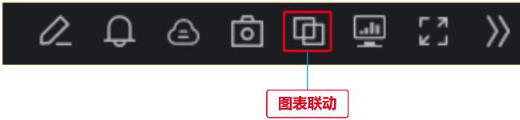
选择【主图工具栏】中的【画线】，点击后便会展示线型，用户可以根据自己的
需要选择合适的线型。
展示在外的是常用画线类型，包括直线、射线、平行线等，点击“…”可查看完
整的线型。在完整线型的最下方点击“自定义设置”，长按并将线型拖动至“常
用画线类型”内，或点击线型右上角的“加号”，则可添加线型。常用画线类型
内部也可以拖动调整顺序，做到可自定义展示在外的“常用画线类型”。
当线型已经选择好并添加到主图中后，用户可以通过跟随线型的设置框来对线型
的颜色、线宽、延展方向等进行调整。
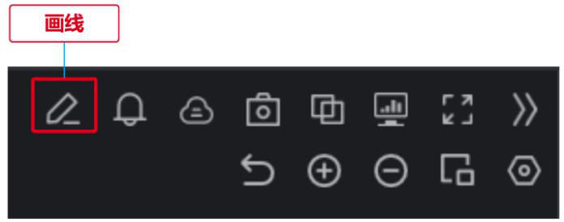
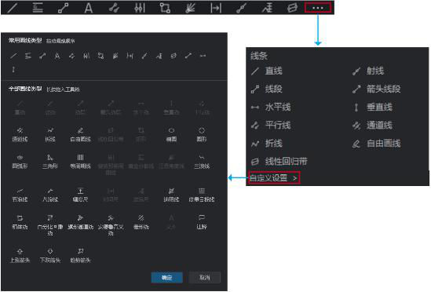
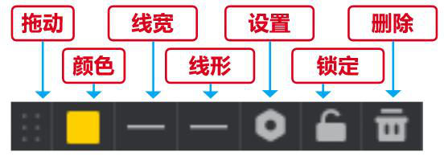
②颜色：可调节线形的颜色和不透明度
③线宽：可调节线形的粗细，默认为最细
④线形：可选择实线、虚线段和虚线点
⑤设置：调节样式，包括颜色、线宽和延展方向，也能将此设置应用于后续此类
线型。调节定位点，便于更精确的定位线形
①画线节点自动吸附：在绘制线条、形状或路径时，工具会自动将线条的端点或
交点吸附到预定义的位置或已有的图形节点上。
②跨周期画线：在一个周期内画线，线形会同样出现在其他周期中，利用不同时
③连续画线：画完一条线后，不会自动退出画线功能，继续点击图像可以连续画
⑤全部删除：全部删除图上所有线形，包括跨周期画线
预警功能通过设定价格触发机制及时提醒用户市场的变化，使用户能够实时监控
市场状况，捕捉潜在的交易机会，最大程度上降低潜在的损失风险。
①右击【合约列表】想要添加预警的合约，选中【预警】即可编辑此合约的预警
②右击合约主图，选择【预警】也可编辑此合约的预警条件
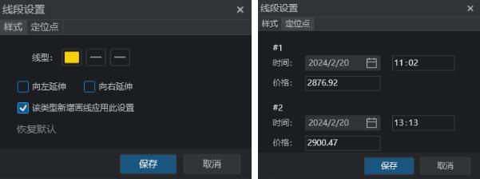
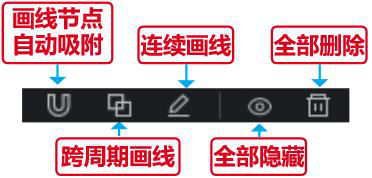
4 点击【系统操作设置栏】中的【预警】图标，进入现有的预警合约管理界面。
如果是从合约列表或者主图进入预警，则预警合约默认为进入时的合约名称，可
以点击进行修改。然后选择价格、日涨幅、5 分钟涨幅等价格相关指标设定价格
触发机制，也可以设定集合竞价时间段不预警。
点击【预警方式】可以选择客户端的三种预警方式，可以叠加选择。如果选择持
续监控，则每当价格波动至所设定的目标时，都会触发一次预警。
，则可进入预警管理界面，或右击行情图，选择
“预警”。预警图标默认为灰色，当颜色变为黄色并且闪烁时说明有预警信息。
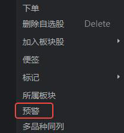
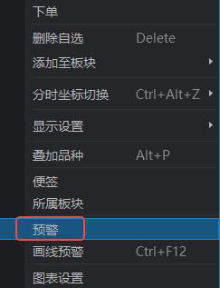
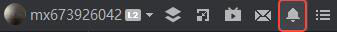
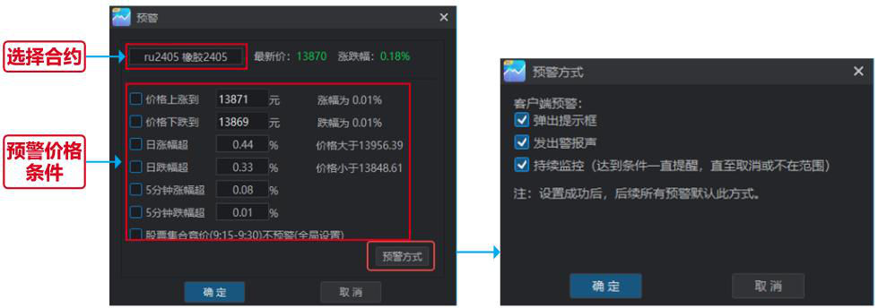

在“我的预警”界面，可以查看所有预警信息，包括正在运行的预警和已关闭的
预警，可编辑其预警调节、预警方式和预警状态，也可以勾选预警后点击“删除
所选”删除预警。
在此界面点击“添加预警”，则和合约进入预警后的界面一致，可以对合约的价
格涨跌、涨跌幅以及预警方式做出设定。
预警结果展示的是触发预警条件的预警设定，可对触发记录进行单条删除或批量
清空。
画线预警功能是指当用户在图表上绘制特定的水平线，一旦市场价格触及或穿过
这些线，系统即时发出警报。画线预警提供了更直观、个性化的市场监控方式，
这能使用户能够方便地标记关键支撑、阻力水平或其他重要技术点，有助于及时
把握交易机会和管理风险。
图标进入画线预警。
②右击【合约】中的品种行情图，选择【画线预警】即可打开此功能。
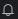
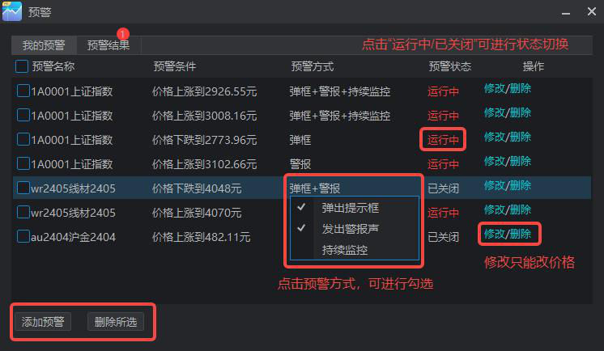
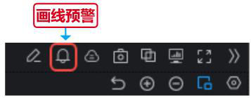
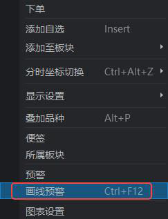
打开【画线预警】功能后，此时鼠标在行情图中会出现一个定位线，点击当前价
格的上方则添加“价格上涨到XXXX”时预警，“XXXX”为鼠标所在位置的价
格。同理，点击当前价格的下方则当“价格下降到XXXX”时预警。画线预警可
以设置多个，价格触达时都会触发预警。
画线预警添加之后，水平线右侧会展示“上涨/下降到设定值”则触发预警的预
表示不可拖动，点击可切换状态。
右击【画线预警】的线型即可对其进行设置，可以编辑价格、设定预警方式。也
可以锁定或者删除画线预警，点击【锁定】会锁定该合约的所有画线预警，而【删
除】只针对此价格的画线预警。
期货行情指标是指用于分析和评估期货市场走势的一系列指标和工具，涵盖了市
场的价格走势、成交量、持仓情况等，有助于交易者制定决策、识别趋势、管理
风险等。
①点击【主图工具栏】中的【更多】，勾选上【指标选择栏】选项，，则会在行情
图的下方出现主图和副图指标选择栏，以及【指标管理】选项。勾选的指标会上
主图和副图上展示。
②右击行情图表，选择【显示设置】，勾选【指标选择栏】
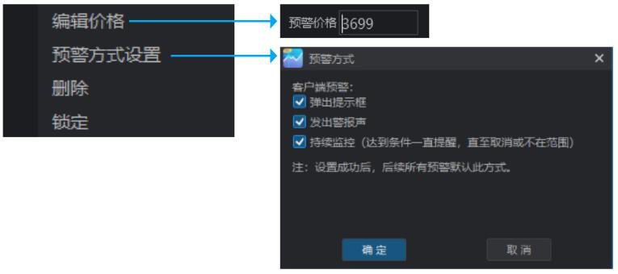
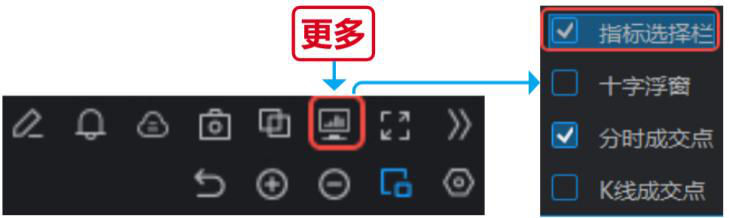
①主图指标：指标线形展示在主图中，指标数据在图表左上角，默认数据为最新
时刻的数据，优先展示十字光标位置的数据。主图中最多可以展示5 个指标，可
以点击展示更多指标。多指标时可以调整线形颜色或者点击隐藏
线形以进行区分。
②副图指标：每个指标单独存在一个副图中，指标数据在图表左上角，默认数据
为最新时刻的数据，优先展示十字光标位置的数据。可以点击展示更多指标，
最多同时展示10 个副图指标。
③指标选择栏：主图指标选择栏和副图指标选择栏都在行情图的下方，左侧为副
图指标栏，右侧为主图指标栏。点击指标栏中的指标，则会在对应的主图或者副
图上展示。
④指标管理：指标管理在右下角，用于查看指标说明、编辑指标属性和源码。
在主图指标栏内，已被选中的指标会变成蓝色，再次点击则取消选中。
既可以在副图指标栏内点击指标进行选中或者取消，也可以点击副图右上角的
进行指标切换，或者点击副图右上角的
来关闭此指标。
下面以【MA(均线)】这个主图指标为例，介绍指标及其设置方法。
①MA（均线）：
代表过去几日的均值，连起来则绘制成均线。例如MA5 代表过去5 日的均值，
后面的箭头代表和昨日相比是上涨还是下跌。
②指标数据条：
当鼠标放在MA 上时，会出现设置项。
则隐藏MA 数值；
则进入设置界面，用于为当前的周期配置其展示的均线。
则会隐藏均线，右击图表内的区域，选择
同一个指标在不同的周期下的设置是独立的，如果从MA 的日线进入设置，则可
以设置该指标或其他指标在日线中的属性。如需将此周期的设置同步到其他周期，
则需勾选设置下方的【应用于全部周期】。
从MA 指标进入设置界面，不仅可以设置该指标，还可以在指标列表页切换其他
指标进行设置。界面内可以选择均线的数量和属性，包括均线的周期、线宽和颜
色，点击确定即可保存。
在属性设置下方也可以看到指标的详细说明，点击【编辑源码】则会跳转至【指
标管理】对应的指标处。
除去在主副图下展示的指标之外，软件还提供其他丰富的指标，用户可以自由选
择并自定义主副图所展示的指标。此外，用户还可以自己使用代码编写指标，并
保存在指标库内。
除了已添加的指标之外，系统还提供按照策略进行分组的指标库，用户可以自由
添加至已有指标中，也可以删除已添加的指标并放回指标库。
指标库中还有一个“自编指标”的类别，可以自己添加自编指标，并分组存放。
双击指标即可看到其指标源码，系统支持对源码进行编辑，完成编辑之后还可以
点击“测试”查看指标的线型，点击“应用”即可保存修改。
在编写源码的时候利用系统自带的函数库可以大幅提升编写效率。
指标管理相比于指标设置只能调整周期和线型提供了更多的调整点，比如可以修
改指标类型，将主图指标改为副图指标；调整其指标数值的小数位数等。
多品种同列功能支持在同一交易界面同时查看和分析多个不同品种的价格走势，
这有助于交易者比较不同市场的相对表现，识别跨市场的相关性和趋势，更全面
地了解整体市场动态，并在多个市场中寻找更广泛的交易机会。
他合约，展示在同一屏上。多品种的顺序是按照同分类下所选合约开始向下排列
的顺序，默认多品种按照2*2 的样式展示四个品种。
持一致。
选择展示样式：默认展示2*2 的多品种图，可以点击【图例】进行调整，品种仍
然按照同类别顺序递延。
选择副图指标：切换时多品种图表同步切换副图指标
切换周期：切换时多品种图表同步切换展示周期
点击主图工具栏内的切换，可以按列表顺序切换同列表页内其他品种
双击多品种同列中的主图可以取消同列，全屏展示此合约的主图。
此面板提供多种多样的图表工具箱，支持自定义界面样式，并且可以将多个图表
进行联动，能满足个性化的盯盘交易需求。
点击顶部【行情板块导航条】内的【自定义】，进入自定义盯盘板块。
系统提供了四个默认组合方式，分别用于交易、盯盘、多周期同列和策略应用，
用户可选择系统组合进行盯盘，也可以新增空白页，在空白页上添加盯盘工具。
编辑过的模板可重命名，保存在“我的”模板内。
点击界面右上角的工具箱，可自由选择组件搭建模板。
工具箱内的组件分为行情、交易、工具和策略选项，可根据用途选择合适的组件
进行组合，将组件从工具箱中拖动到界面中即可生效。
将需要联动的组件都设置为相同的数字，并且通过“搜索合约”选定所需要查看
的合约，那么多个组件便可以联动展示该合约的各项信息。
1 搜索合约：搜索合约并与此组件关联
2 联动功能：将多个组件的联动组设置为同一个数字，则这几个组件都与同一
个合约关联，并同步变化。
3 锁定：开启锁定后无法编辑已有组件
4 保存为模板：将当前的组合和设置保存，并且命名为新的模板，保存在“我
小窗助手功能将多个独立的图表和数据小窗口置于同一组件中，包括自选、短线、
排名和资讯，以便同时监控多个市场要素。此外，小窗助手还支持屏幕置顶和界
面缩放，方面用户在PC 上实时监控数据和信息。
点击顶部【行情板块导航条】内的【小窗助手】，即可打开组件。
点击设置，勾选【小窗置顶】选项，可以将小窗固定在界面最顶部，不会被其他
网页遮挡。此外，小窗还可以缩放大小，便于用户在使用电脑时随时监控信息。
①小窗助手中包含自选、短线、排名和快讯四个板块。其中自选中又可以分为自
选分组合约和持仓合约，完全覆盖用户所关注的品种合约。
②短线精灵经过设置可以支持内外盘全品种的监测预警，包含成交异动和走势异
动等，实时发掘投机机会。
5 排名最多可以支持四个图例同步展示，多项排名一网打尽。
持仓分析可以看出市场参与者对市场的整体情绪和看法，帮助交易者更好地把握
市场趋势。
在【合约】界面中行情图下方的合约信息区，点击右上角【持仓分析】即可进入。
持仓分析功能由三个部分组成：成交持仓、建仓过程和持仓结构。
①成交量：反映了一定时间内的实际交易活动水平。高成交量通常意味着市场活
跃，而低成交量可能表明市场相对冷清。通过分析成交持仓，可以识别市场参与
者的兴趣和活跃度，从而更好地了解市场趋势。
②持仓变动：观察成交持仓的变化可揭示投资者对市场的看法。大量增仓/减仓
可能暗示着市场观望或调整策略,有助于预测市场的未来走势。
持仓结构展示了每家期货公司的持仓结构和多空比例，反映了市场上多头和空头
的分布。高多头比例可能表明市场看涨情绪较强，反之亦然。多空比例的分析有
助于了解市场的整体情绪和预期走势。
图表设置包含行情图表在通用、交易、画线、股票和坐标轴方面的展示形式设置，
配置后也可以点击“恢复默认”以恢复成初始配置。
配置浮窗展示、线形显隐、分时图缩放以及K 线的样式
选择是否展示买卖交易和条件单相关的价格线，也包含是否展示买卖成交点。
设置行情展示或隐藏分时和K 线的不同价位线型
选择跨周期画线时不同时间级的周期，以及是否在进入画线时自动打开画线社区。
选择集合竞价在开盘前后是显示还是隐藏
选择分时和K 线的坐标轴类型和位置
下单操作是用于买卖期货合约的基本操作，在下单前，用户需要首先登录期货资
金账户，可以是真实资金账户也可以是模拟账户。
如果您希望进行实盘交易，并且还未拥有资金账户，可点击界面右下角的【期货
开户】，进入开户界面。只需要准备一部手机、身份证原件、银行卡照片和手写
签名照，按照指引便可完成开户。
如果用户还未准备好开户，同花顺期货通免费提供给所有用户模拟交易账户，允
许用户在真实市场条件下使用虚拟资金进行仿真交易。模拟交易提供了一个无风
险的环境，让用户能够测试和优化交易策略、熟悉平台功能并理解市场运行方式。
点击【交易】-【期货交易】-【模拟交易】即可自动获得模拟交易账号，进入模
拟交易。
当用户拥有了一个账户，选中了想要下单的合约，便可以进行下单操作。下单操
选择【模拟交易】则自动登录模拟交易账号，则可以进入实盘交易或者模拟交易。
或者“行情K 线图”，选择【下单】即可。
如果用户还未登录，点击【下单】则会跳出期货通交易登录框，选择期货公司和
柜台，输入账户密码即可登录。如果忘记密码也可在此进行修改。
登录后便会弹出交易界面，交易界面分为盘口信息、大单智能交易、下单板块和
持仓板块。
首先需要关注目前账户的资金信息，包括权益、可用资金和资金使用率，根据目
前的资金情况来选择标的和交易手数。
1 权益=期初权益+出入金+平仓盈亏+盯市盈亏+期权执行盈亏+权利金-手续费
2 可用资金：可用资金=动态权益-保证金-挂单保证金-挂单手续费
3 资金使用率=[1-（可用/权益）]*100%
查看所选合约的盘口信息，包括最新、涨幅、涨跌等，判断合约下一阶段的涨跌
情况。点击切换，可以切换为一档买卖价格，看实时的买卖量。购买Level2 则
可以查看五档盘口委托价。
下单前先查看下单合约信息，包括一手的数量以及保证金等。
1 选择下单标的类型，买卖期货还是期权
2 选择品种、手数和价格，默认手数为1 手，可以在设置中进行调整。价格可
以自己输入，也可以选择最新价、对手价、排队价、市价和超价
3 选择买卖方向，买多、卖空或是平仓
下单后，系统便会接受委托，用下单价格去市场上撮合交易。交易成功后持仓的
单子在持仓内查看，委托内查看还未成交的单子，成交内查看交易记录。
双击持仓合约或者点击【全平】即可选择平仓，点击【反手】即可平仓所有持仓
合约并且同时反向开仓。
下单操作也可以在下单工具条完成，工具条所占空间小还可以常驻界面，方便用户在查看行
情时快速进行下单操作。
点击【交易】-【下单工具条】即可进入功能，弹出工具条界面。
双向开仓是指对同一品种的同一合约开出一个上涨的做多仓位，同时再开出一个
下跌的做空仓位。同时买入和卖出仓位可以有效降低在期货交易中的风险，它的
主要作用是对冲风险，将投资过程中的风险有效控制。
点击【交易】-【期货交易】-【双向开仓】，打开此功能下单界面。
选择账户、品种合约、手数和价格即可双向开仓。
双向开仓用于趋势追踪策略，即在市场呈现强势趋势时，建立相应的多头或空头
头寸，可以避免对价格盘中波动的主观猜测，仅仅是让市场告诉投资者该如何操
作。一般来说，活跃品种在盘中一旦走出某个趋势，价格就会有一个沿该趋势的
惯性，双向开仓就是利用价格惯性释放反方向头寸以获取收益，因此双向最好追
逐活跃品种。
条件单功能允许交易者在预设的市场条件满足时自动触发交易指令，从而无需实
时监控市场。通过设置特定的价格、时间或其他触发条件，条件单可以帮助交易
者在市场波动大、交易机会瞬息万变的情况下实时便捷地进行交易。
条件单根据触发条件的不同分为【价格条件单】和【时间条件单】，价格条件单
会监控行情走势，到达预期价格时触发自动交易；时间条件单同样也会自动盯盘，
到达指定时间触发自动交易。
①选定合约：选定下条件单的品种合约
②条件设定：设置下单的价格条件、买卖方向、下单价格和下单手数
③价格保护：由于价格条件单在行情不活跃或快速发生变化时，成交价和指定价
之间可能存在跳点数（一个跳点代表一个最小价格变动单位），可在条件单内进
行设定价格保护，确保委托价和触发价之间的价差在一个范围区间内。
④额外条件：价格条件单内也可以设定止盈止损和有效期，可固定设置或者动态
设置止盈止损点。
以时间作为买卖点不存在跳点的问题，但是为防止时间触发的时刻价格波动较大，
也可以附加一个买卖价格的条件。时间条件单同样可以设置止盈止损条件单及其
有效期。
在【交易设置】-【条件单】内，可以设置期货交易和期权交易的默认条件单，包括设置默
认委托价、有效期限。
止盈止损开仓即在开仓时设定止盈止损的条件单，条件单的设定有三种方式：限
价止损止盈、指定价格止损止盈和动态追踪。
买卖操作。
条件单操作。
一个对应变动价位，止盈止损价也跟着变动价位；当价格从当前最高/最低价回
撤到对应止损/止盈价位时，触发自动止损/止盈。
在【交易设置】界面选中【止损止盈】选项，可以在设置中设置默认的止盈止损委托价格、
有效期限、基准价、自动止盈止损和画线止损止盈的策略。此外，也可以开启开仓自动止损
止盈，同时应用于实盘交易和模拟交易。
画线下单允许用户在行情图上进行条件单配置，并根据图表上的特定条件自动执
行交易，使下单过程更加直观便捷。
注：下单前需先登录交易账户；画线下单是条件单，不保证成交，且50%概率成
交在对价，可能会存在点差；同时，条件单在云端运行，不受软件打开和关闭的
影响，自动确认结算单。
点击【画线下单】后则会弹出下单框，选择手数和买卖方向，然后用鼠标在行情
图上点击进行价格选择，如此便完成了一次画线下单。例如，在下单框里选择1
手，买入，在行情图中点击1850 价位，则代表当价格达到1850 时，下达买入1
手的操作指令。
，用鼠标点击行情图上已存在的下单线，则可删除。
由于画线下单属于条件单，点击“设置”
可以设置画线下单的默认委托价、价格保护和有效期限，应用于此次的画线下单。
单的入口，即“交易-期货交易-键盘下单”，可打开功能；二是在交易主界面的
右上角增加键盘下单的图标，点击后可打开功能。另外可以通过快捷键“Ctrl+J”
来唤起或关闭键盘下单页面。
键盘下单页面包含两部分，上部分是合约信息和持仓信息展示区，下部分是行情
与委托展示区，具体说明如下：
使用键盘下单功能前需要对键值进行设置，键值设定后会立即生效。默认支持的
交易操作共有15 种，用户可以根据需要对“限价买入、限价卖出、手数调整”
这三类功能新增操作键，例如可以设置多个限价买入的快捷键，设置多个指定手
数的快捷键。每个操作的具体说明如下：
设置完成键值后，即可通过键盘的操作来实现下单。
当鼠标的光标在输入框（如键盘精灵输入框、合约代码输入框等）或者不在客户
端中（例如最小化客户端），则不会触发键盘下单快捷键功能。
买入为开仓，空头持仓时委托买入为平仓，卖出为开仓。
用。
旋风下单是期货通PC 推出的一款特色快捷交易功能，该功能提供了交易所需的
必备信息，能够无需进行输入即可在任何价格快速点击下单，提供了无限深度的
价格范围，带来如旋风一般的交易速度与体验。
旋风下单面板左侧是交易信息设置、右侧是下单和行情展示区域，具体布局如下：
用户完成合约信息设置后，开始在右侧盘口区域进行交易操作，具体如下：
①买入或卖出委托：左键单击交易区的空格，即买入和卖出所在两列区域，点击
后会按照格子所在行的价格发出对应买入或卖出的委托。
②撤单：左键单击有数字的格子，即在该价位有可撤委托的格子，则松开鼠标后
会将该价格的委托进行撤单。单击表头“买入”和“卖出”，会撤销所买入方向
或卖出方向的所有委托。
③改价：右键单击有数字的空格并上下移动，松开鼠标后完成委托改价的操作
④反手：点击左侧的“反手”键则会对当前合约净持仓可用部分进行反手操作。
⑤锁仓：点击左侧的“锁仓”键则根据当前合约净持仓以同数量反方向进行开仓，
例如持有多仓1 手，空仓2 手，则净持仓为1 手空仓，则会开仓1 手多单（价格
类型根据锁仓的设置来选择）。
⑥全平：点击“全平”按键之后，会将当前合约所有可用持仓都进行平仓。
⑦全撤：点击“全撤”按键之后，会将当前合约所有委托不区分方向都进行撤销
⑧平净持仓：用户单击平净持仓按键时，对净持仓进行平仓，例如持有多仓1
手，空仓2 手，则净持仓为1 手空仓，那么双击后平仓1 手空仓，保留多仓和空
仓各1 手；若仅有多仓或空仓，相当于进行全平。
账户相关的功能主要为账户分析和银期转账，账户分析用于对历史交易和持仓记
录进行分析，银期转账用于在银行卡和期货账户之间转账。
账户分析可以看到账户在不同周期内的盈亏总额、资金信息、收益走势、品种结
构和每日盈亏，还可以查看过去一段周期内的每笔成交明细。
银行转期货和期货转银行的流程相同，都是输入资金密码、银行密码和转账金额
即可完成转账。在输入资金密码和银行密码之后也可以查询银行卡的余额和可转
资金的数额。
交易设置内包含通用设置、期货交易设置、期权交易设置和功能设置，部分功能
设置内容已跟随功能进行说明。
点击交易界面右上角的【设置】即可进入交易设置界面。
此外，也可以通过条件单、画线下单、键盘下单和旋风下单等功能设置的入口进
入交易设置。
通用设置包括交易、持仓和弹窗相关的设置。
期货期权的交易设置分为基本设置、默认手数、超价和对价。
多账户交易功能的根本目的是帮助具有多个不同交易账户的专业投资者在交易
过程当中按照设定的策略，实现一次指令，多个交易账户同时下单。
①支持不同期商不同柜台的多个交易账号同时下单、撤单和改单，也支持单个交
易账号之间切换下单。
②支持多达6 种不同策略，满足所有专业需求。
④交易组支持至少10 个子账户进行同时交易
⑤支持simnow 账号进行仿真交易
⑥完美适配期货通现有自定义页面、多屏显示、网格策略等专业行情交易功能
⑦后期陆续新增键盘下单、鼠标下单等多种专业下单方式
⑧后期新增账户分析和复盘功能帮助实现交易回溯
要使用同花顺期货通多账户交易功能，必须注册并通过同花顺账号登录客户端
（游客账号无法使用该功能）。另外，多账户交易功能仅支持在自定义页面当中
使用。
①用户可以通过交易登录框右上角“多账户”标识或者“期货交易”标签下的
菜单进入交易组（多账户)管理界面。
②打开交易组（多账户）管理弹窗后，可通过右下角“添加新账户”按钮来添加
自己需要进行交易的交易子账户。之后可以在交易组（多账户）管理主窗口对各
个子账户进行备注别名。同时，可在各交易子账户右侧“操作”类目下针对该子
账户进行切换网关、银期转账、修改密码、账单查询等一系列操作。
③在添加完交易子账户后，可点击“交易组（多账户）管理”左下角“创建交易
组”按钮，进行交易组的创建。可根据自身需求将已有子账户或者新的子账户添
加到该交易组当中。
④添加完毕后，可在交易组页面上方选择对应下单策略。具体关于各下单策略的
使用说明请见交易组管理页面上方（如下图）。
⑤部分策略需要对下单倍数等参数进行设置后才能生效。设置完成之后，进入自
定义页面通过同花顺账号的密码即可解锁多账户交易功能。
首次使用多账户交易功能下单之前请根据自身喜好和习惯配置对应的自定义页
面，各交易组件左上角均可选择或者切换具体执行下单的交易组或者交易子账户。
需要注意的是，自定义页面当中组件右上角的数字“分组”标识除了具有行情功
能联动的作用，同时也具备交易组联动的作用，即当某个自定义分组当中的交易
组件切换了交易组，则其他自定义分组当中交易组件也会随之切换多账户交易组
云端条件单和云端止盈止损在多账户模式下操作与单账户模式基本相同。区别在
于左上角的交易组切换，用户可根据自身需求进行相应切换操作。交易组各子账
户下单手数按照设置的交易策略执行，数量向下取整。生成条件单或者损赢单之
后在对应列表组件可以查看和操作。
单，以主账户手数位基准，乘以自定义的“下单倍数：得到相应下单手数（向下
取整）。
以主账户手数为基准，乘以【各账户权益/主账户权益】的倍数得到相应下单手
数（向下取整）。
以主账户手数为基准，乘以【各账户可用资金/主账户可用资金】的倍数得到相
应下单手数（向下取整）。
户中（向下取整）。
分配到所有参与下单的账户中（向下取整）。
配到所有参与下单的账户中（向下取整）。
智能交易功能是期货通推出的一款辅助交易者完例如大单拆单、扫盘委托等特定
交易操作的有效工具。
该功能仅需要用户通过简单的参数设置，变可以在用户交易下单后自动执行算法
完成交易，以此达到以下几个效果：
①降低交易冲击成本，以最优价格成交
④减少人工干预，让交易按照预期自动完成。
根据设定的参数，按照固定的时间间隔和手数，以不高于指定价格的对手价，拆
分成子单发出委托，直到全部成交。
【适用场景】：交易手数较大，并认为市场在未来一段时间内，成交量随着时间
是均衡分布的，希望能够将交易价格控制在指定值内，完成所有手数的交易。
【例子】：设定的时间间隔为5 秒，每笔委托手数为10 手，启用追单，且追单点
数为1，追单次数为3，此次交易为100 手买入开仓，设定价格为1000。那么将
会在0 秒、5 秒、10 秒...分别发出10 手的买开委托，每笔委托若在追单未成功
后将撤销进入下一次委托，直到全部100 手成交。
根据委托手数的数值生成方式不同，可以分为经典冰山、随机冰山、高效冰山、
幽灵这四中。
按照固定的手数，以不高于指定价格的对手价，拆分成子单发出委托，达到设定
的条件后进行下一笔委托。选择条件包括“上一笔部分成交、上一笔全部成交、
上一笔成交比例、上一笔成交时长、上一笔成交比例和时长”这5 种（下同，不
【适用场景】：将大单拆分成小单，减少对市场冲击。
【例子】：设定每笔委托手数为10 手，此次交易为100 手买入开仓，设定价格为
1000，在上一笔全部成交后发出下一笔。则会在拆分成10 手一笔委托买开单，
全部成交后，发出下一笔10 手委托买开单，知道全部100 手成交。
根据设定的参数，在手数上限和下限范围内，随机确定数量，以不高于指定价格
的对手价，拆分成子单发出委托，达到设定的条件后进行下一笔委托。
【适用场景】：想在指定范围内随机生成手数，隐藏交易意图并减少委托笔数。
【例子】：设定手数上限和下限分别为5 和10，此次交易为100 手买入开仓，设
定价格为1000，在上一笔全部成交后发出下一笔。则会在5 和10 之间随机生成
一个数值作为委托手数，全部成交后，再次生成一个新的数值作为委托手数进行
拆单，知道100 手全部成交。
根据对手价挂单手数的某个比例来确定委托手数，以不高于指定价格的对手价，
拆分成子单发出委托，达到设定的条件后进行下一笔委托。
【适用场景】：希望随机生成手数同时提高全部成交的概率，提高交易效率。
【例子】：设定以对手价手数的10%作为委托手数，此次交易为100 手买入开仓，
设定价格为1000，在上一笔全部成交后发出下一笔。则以此时卖一档委托手数
的10%作为委托手数进行拆单，该笔全部成交后，则以最新的卖一档委托手数的
10%作为委托手数发起委托，知道100 手全部成交。
根据设定的参数，在手数上限范围内，随机确定数量，以不高于指定价格的对手
价，拆分成子单发出委托，达到设定的条件后进行下一笔委托。
【适用场景】：想随机生成手数，隐藏交易意图。
【例子】：设定手数上限为10，此次交易为100 手买入开仓，设定价格为1000，
在上一笔全部成交后发出下一笔。则会在10 以下随机生成一个数值作为委托手
数，全部成交后，再次生成一个新的数值作为委托手数进行拆单，知道100 手全
部成交。
设定总的算法策略交易时长，并根据委托时间间隔计算出委托次数，进而在相同
时间间隔X 秒发出这些委托，子单的委托的手数按照上限区间内随机生成数值，
以设定的委托价格作为子单委托价。当在子单发出委托后的2/3*X 秒后，若为全
部成交则立刻撤单并重新以设定的委托价格类型发出委托。
【适用场景】：在使交易对市场影响最小化的同时提供一个较低的平均成交价格，
从而达到减小交易成本的目的。
【例子】：设定总运行时长为120 秒，时间间隔为10，手数上限为10，此次交易
为100 手买入开仓，设定委托价格类型为对手价。根据时间间隔10 秒计算出的
需要委托笔数为120/10+1=11 笔，则会将100 手分11 次，以对手价，每次手数
不超过10 手，去完成交易。
为了接近市场平均成交价格，跟踪市场的成交量进行拆单，设定市场每成交一定
数量，则按对手价发出设定的跟随数量。
【适用场景】：资金规模非常大，希望能更有效降低交易成本
【例子】：设定市场每成交10 手，则发出子单委托，委托价格为对手价，委托手
数为2 手，此次交易为100 手买入开仓。则当该合约此刻市场成交了25 手，则
拆单发出委托4 手买开单，后市场再成交了15 手，则拆单发出委托4 手买开单
（从开始到目前市场累计成交了25+15=40 手，则需要累计跟单40/10*2=8 手，
此前已跟单4 手，此次就跟单8-4=4 手），以此类推，知道全部100 手成交。
自定义套利支持用户根据自身交易需求，灵活构建套利策略组合。通过配置合约、
策略类型及执行方式，实现多品种、多腿套利的快速下单与智能执行，适用于跨
期、跨品种、跨市场等多种套利场景，是专业套利交易的重要工具模块。
支持“全部同时”与“区分主动腿”两种套利策略。其中，“区分主动腿”更适
合包含低流动性合约的套利组合，您可以根据实际交易需求灵活选择。
在“区分主动腿”模式下，您可使用多种附加策略与追单策略，有效防止套利“瘸
腿”问题，帮助您减少滑点干扰，提升整体交易效率。
下单界面清晰直观，操作便捷，极大简化了套利策略的执行流程，让套利交易变
得更轻松、更省力。
我们将陆续推出单份套利组内拆单、多账户套利下单、套利条件单、套利风控单、
套利移仓换月等功能，全方位满足您的进阶套利需求。
标签进入【自定义套利】列表。点击下方“+”图标或左上方的齿轮图标，打开
“添加自定义套利”弹窗进行创建。
齿轮图标，打开“添加自定义套利”弹窗进行创建。
支持通过“+、−、×、÷”四种基础运算符自定义编制套利组合，例如：RB2506
- RB2512。公式编辑完成后，可选择主动锁定或解锁，以便灵活控制交易操作。
支持设置价差显示的小数位数，默认模式为“自适应”，可根据需求手动选择保
留0～9 位小数。
组合。该策略下，同一套利组合下的所有成分腿合约全部同时发出委托。同时，
用户可以自定义委托的价格类型。委托价类型默认为“对手价”，允许自定义修
改。
当中包含远月合约或者期权等）和“成分腿”合约数量较大的场景。在该策略下，
需要选择流动性最差的合约作为“主动腿”合约，每个自定义套利组合内只允许
设置1 个“主动腿”。首次使用“区分主动腿”策略时，请在“套利交易设置”-
“算法设置”中，对默认追单参数进行设置。
①“主动腿”：交易方式有三种：部分成交不追单，剩余部分等待下一次价差满
足时再进行挂单；部分成交立即追单；不考虑盘口，即部分成交时不会处理剩余
挂单。
②“非主动腿”：所有“非主动腿”合约的价格类型均为“对手价”，且无法修
改。交易方式有三种：立即追单；条件追单，该方式会根据套利交易设置当中设
定的条件追单参数进行条件追单；不追单，此时建议可以勾选“风险附加控制策
略”进行保护。关于“风险附加控制策略”的参数可以在“套利交易设置”-“算
法设置”中进行预设。
③“套利份数拆单”：“区分主动腿”策略下，勾选“套利份数拆单”，软件能够
在主动腿成交数量大于满足1 份套利组合所需要的对应数量时，立即开启对应比
例“非主动腿”的挂单，在一定程度上避免“主动腿”头寸长期暴露带来的风险
敞口损失。因此，在“区分主动腿”策略下，且下单套利份数大于1 份时，建议
勾选开启“套利份数拆单”。
在自定义套利列表或自定义套利组合行情个股页面的右键菜单点击【编辑】按钮，
打开自定义套利策略弹窗进行相关参数的修改。
单】。
持手动或者联动的方式输入具体价差进行下单。
套利设置包括“基本设置”和“算法设置”相关参数。
通过下单板右上角【布局调整】按钮对下单布局进行勾选和调整（中间下单界面
不可取消）。
在下单板右上角点击【策略管理】，可统一查看并管理“期货算法拆单”与“自
定义套利”策略的运行状态。
强烈建议在执行自定义套利交易前，先对套利组合涉及的成分合约持仓进行清空，
避免原有持仓干扰策略运行。同时，在策略执行期间，请勿对相关合约进行手动
交易，以防止交易逻辑异常或滑点偏差。
自定义套利订单完全依赖本地客户端执行，当前不支持云端交易。请务必在套利
运行期间保持客户端处于开启状态，并确保网络连接稳定，以保证策略正常下单。
当套利组合中包含非支持交易的品种（如境外期货、期权等）时，该合约将自动
标注为“计算腿”。计算腿仅参与行情计算，不参与实际交易。
在采用“区分主动腿”策略时，建议将组合中流动性较差的合约设置为主动腿，
以提升整体成交效率和策略执行稳定性。
问财是一个生成式AI 投研助手，基于大模型能力，支持用户围绕市场热点、个
股异动、资金动向、股东结构、板块机会等维度自由提问，由AI 实时生成内容
解答。适用于快速获取结构化观点或启发式分析方向。
支持智能调度、快速推理、深度思考，提供自然语言对话体验，并支持图像问答、
文档问答等多模态能力。
在右上角的【系统操作设置栏】中选择【问财】。
增值服务为用户提供更深入的行情洞察与智能辅助功能，涵盖国际行情、国内行
情Level-2 和智能交易三大模块，旨在全面提升交易效率与决策质量，满足不同
用户的多样化实盘需求。
国际行情限时免费提供芝商所外盘实时行情服务，包括其旗下四大交易所
NYMEX、CBOT、COMEX 及CME，同时涵盖能源、农产品、金属、利率、股指、
外汇等主要资产类别，实现全球主流期货品种与国内市场的行情联动。
国内行情Level-2 覆盖大连商品交易所、上海期货交易所、郑州商品交易所及广
州期货交易所，提供五档盘口数据与快速推送服务，支持更精准的盘口观察和挂
单判断。
智能交易内置7 种算法拆单策略，适用于大单交易执行优化，具备降低冲击成
本、隐藏交易意图、提升成交效率等优势，适配多种交易场景，当前支持限时免
费体验。
服务】即可进入该模块。
芝商所期货合约右上方的【延时】即可芝商所行情订购页。
免费领取方式：
①步骤一：【点击查看】- 【免费领取】；
②完成【实名认证】- 【投资服务协议及投资者适当性声明】- 【免费领取】。
③打开PC 端登录您的期货通账号，即可查看Level2 高级行情。
购买步骤：
①【点击查看】- 【立即购买】；
②选择Level2 所属交易所和周期时长，并支付成功。
4 打开PC 端登录您的期货通账号，即可查看Level2 高级行情。
领取方式：
①【点击查看】- 【点击领取】；
②【选择符合的条件】- 【投资服务协议】- 【报名参加活动】。
出现以下情况时，将执行强平或自动平仓：
手机端期货通查看账单，看下可用是不是小于等于零）。当可用不足时，请及时
使用银期转账—银行转期货功能进行转账操作。
会执行强平。（以上两点强平是模拟柜台制定的规则，实盘会有差异，具体可联
任意点击1 分钟、5 分钟、15 分钟等周期，就能回到单周期页面。
内交易所下的商品期货品种。但是期权交易和股指期货等风险较高的品种需要满
足一定的条件并向期货公司提交申请，详细信息请咨询相关期货公司。
约的交易。但是不可以进行外盘、外汇、黄金、股票等品种的交易，只支持查看
行情。
模拟账户免费发放1000 万体验金，其中100 万在模拟资金账户中，剩余900 万
在模拟银行，可通过银期转账功能调整账户金额。如全部使用完成，您可以使用
其他的同花顺账户登录，会有新的模拟账号和资金生成，目前是无法重置资金的。
您使用软件之前，必须仔细阅读下面的内容，以便全面地了解使用软件的风险。
同花顺期货通（PC）行情交易客户端由浙江同花顺网络科技有限公司（下称“同
花顺”）开发和运营，在交易所的行情发布许可授权下，接入交易所获取行情数
据，交易网关后台对接证券/期货公司的交易结算系统的开放接口。软件系统已
经尽可能采取有效措施保护交易活动的安全，尽管如此，本着对用户负责的态度，
在此提醒用户，使用本软件存在且不限于下列风险：
(一) 在不限于以下故障情况出现时，可能会使您的委托指令无法发出，或产
生错误指令：
所还在正常进行交易。
易所还在正常交易。
(二) 委托交易的数据传输可能因通讯繁忙或丢包等原因出现中断、停顿、延
迟、数据错误、丢失或不完全，造成交易出现延迟、停顿、中断，从而会发生您
不能及时、完整完成交易的风险。因此，您在使用该软件时，及时查证核实成交
情况。
(三) 由于出现网络故障或网络繁忙或交易网关负载过重，或因受到网络黑客、
网络病毒的攻击和入侵等原因，软件可能会出现故障，您可能不能及时进入或通
过该系统进行正常交易，或接到错误信息，或不能使用软件提供的全部或部分功
能（包括但不限于各种自助和预设触发条件的下单功能等）。鉴于上述风险的存
在，您在使用本软件的时候，应当使用其它信息系统或其它交易手段进行验证，
并及时查证成交情况。
(四) 软件发布的行情信息及其它证券/期货信息，因为网络延时等原因有可能
出现错误或被误导，从而导致您做出错误判断，因此，您在使用该软件时，应对
比其他软件，或采用其它手段，并及时查对行情数据。
(五) 条件单和止损单，设定委托发出的条件，当条件满足时，交易系统将委
托单自动报入交易所，当条件不满足时，委托单保留在云端服务器中。云端服
务器可能会出现某些不可控状况，从而导致用户交易损失。
(六) 软件的条件单、止损单，对操作者有一定的交易经验与基础要求，请慎
重考虑使用。
(七) 软件中部分功能是由多条指令组成，用户应自行确认所有指令是否全部
执行成功。在多条指令执行期间，由于断网、软件关闭，但不限于以上因素所导
致指令未完全执行引起的任何问题，同花顺和期货通软件不承担任何责任和义务。
软件按照用户命令发出具体交易指令，最终结果视交易柜台反馈确定。
指令是否有效执行。
指令是否有效执行。
(八) 由于交易所交易规则所限，软件中包括但不限于各种自助和预设触发条
件的下单功能所发生的交易委托不一定能够成交。
(九) 由于用户对开户资料、交易账户、交易密码等重要资料保护不当，造成
被他人盗用，仿冒而产生的亏损由用户自己负责。
(十) 由于您开立的证券/期货交易账户交由他人使用，出现未按您本人意图买
卖证券/期货合约和提取资金的情况，所产生的后果由您本人承担。
(十一) 云端交易只是同花顺提供的一项软件功能便利，在服务器、网络、软
件等故障导致功能失效情况下，由用户自己承担由此引起的交易损失，同花顺和
证券/期货公司均不会为此担责。
另，请务必先使用模拟版体验软件功能，充分了解软件各项功能后再实盘使用，
避免发生因操作失误，或理解偏差而导致的交易损失，我司对此无法承担责任，
请谅解！本揭示书未能尽述一切有关软件电子交易风险的重要事项，用户应该在
细心研究、熟悉软件后，方可使用。证券/期货公司和同花顺，都不会因为您使
用或无法使用该软件而造成的损失承担责任。
同花顺期货通本着对用户负责的态度，会持续完善产品缺陷并提升用户体验。
如有任何有关产品的疑问和建议，欢迎拨打官方952555 热线或者联系在线客服
向我们反馈。